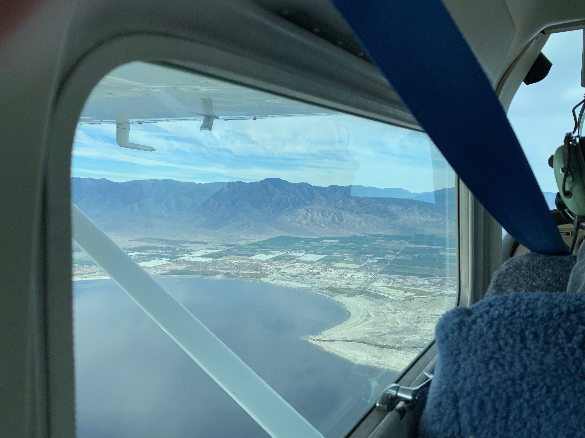
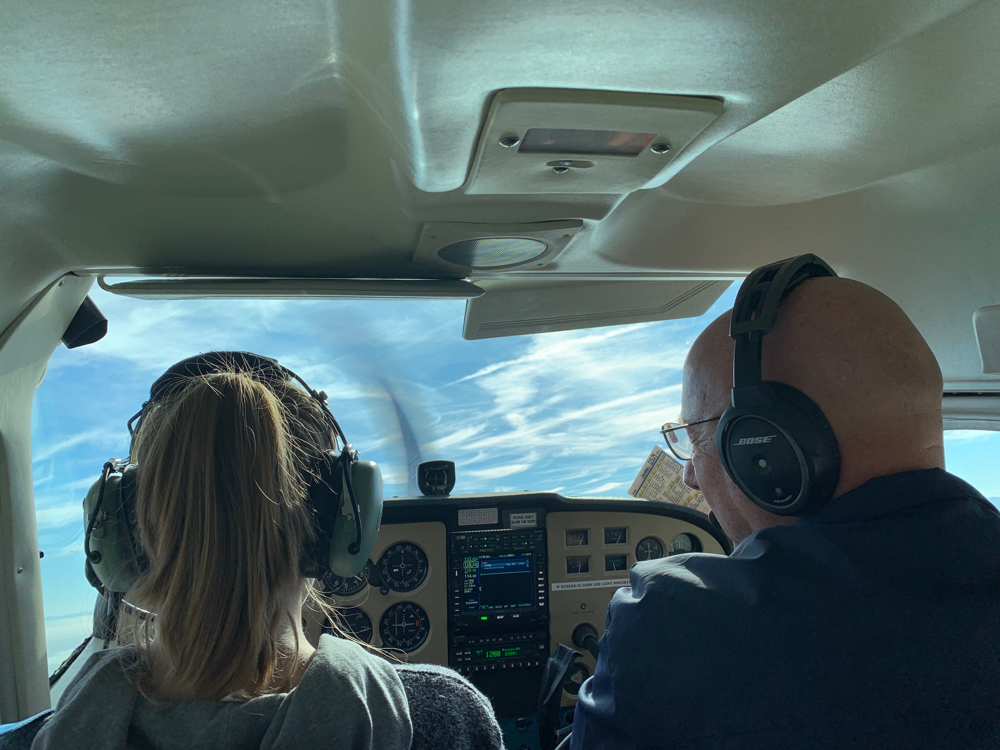
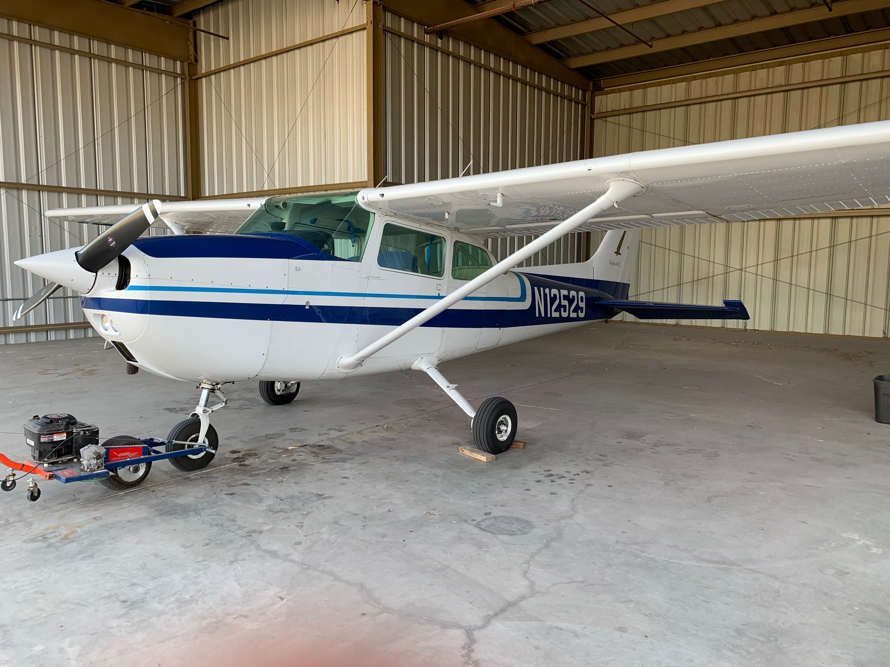

There are loads of types of jets and airplanes, and I've been lucky enough to fly one! I flew an airplane over the Salton Sea and it was truly a remarkable experience. I will hopefully be doing it again soon, and I can't wait!
Here are some pictures of me flying a plane!
  